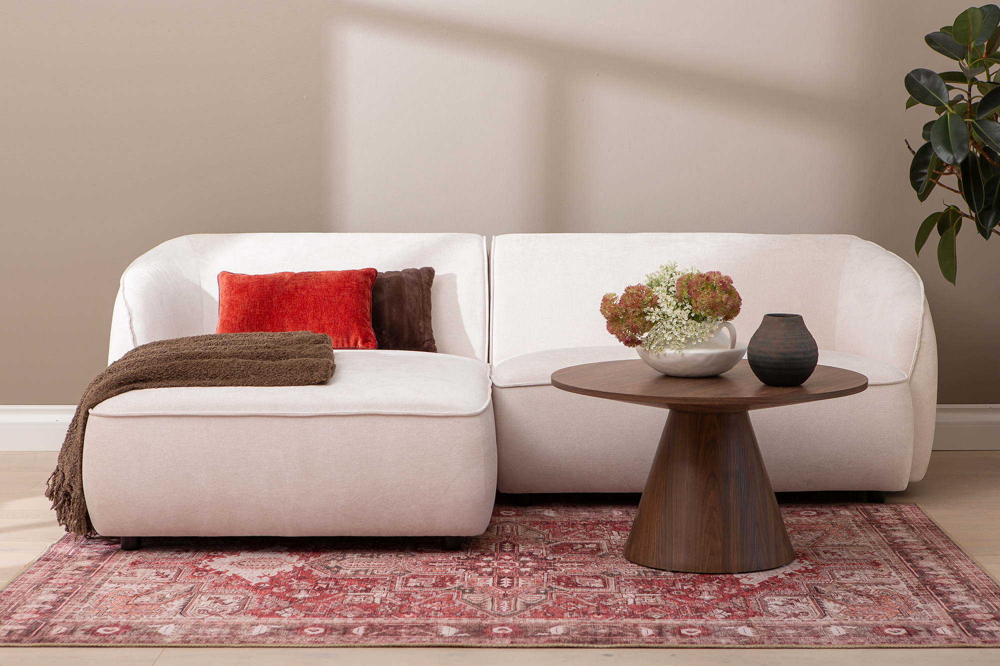
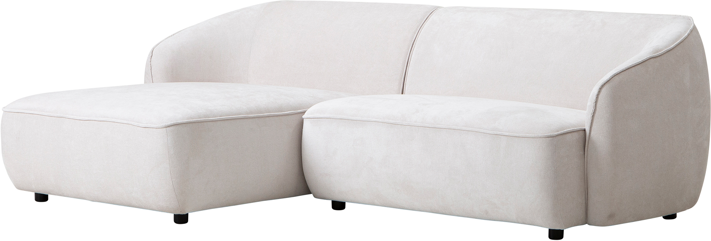
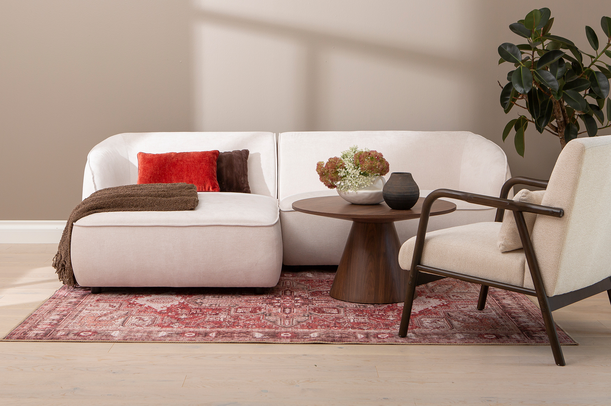
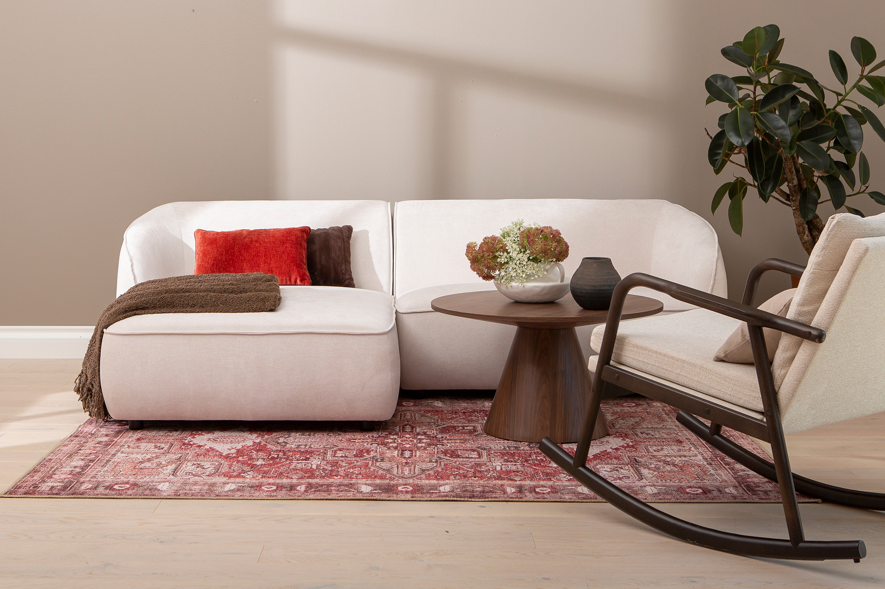
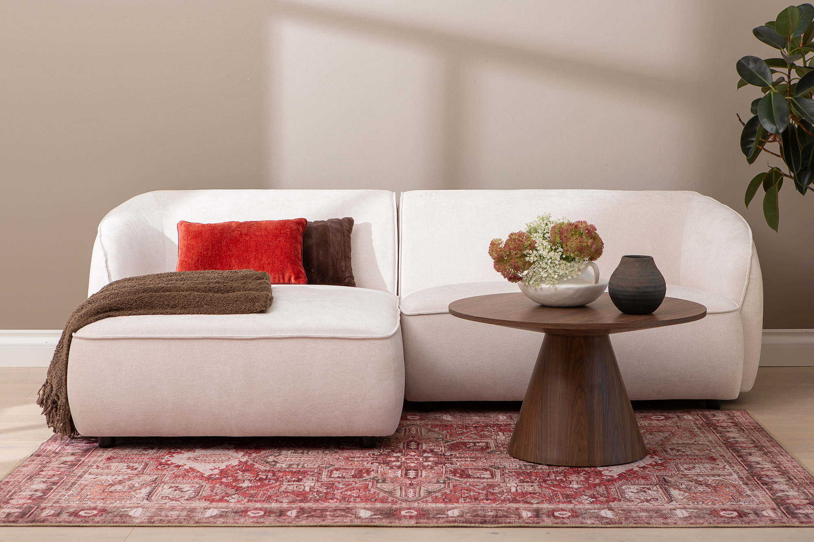
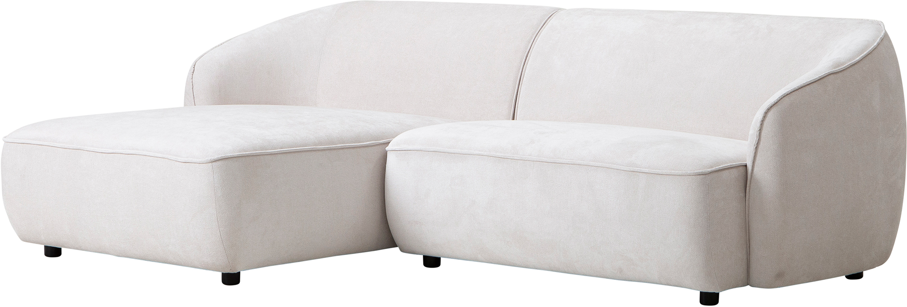
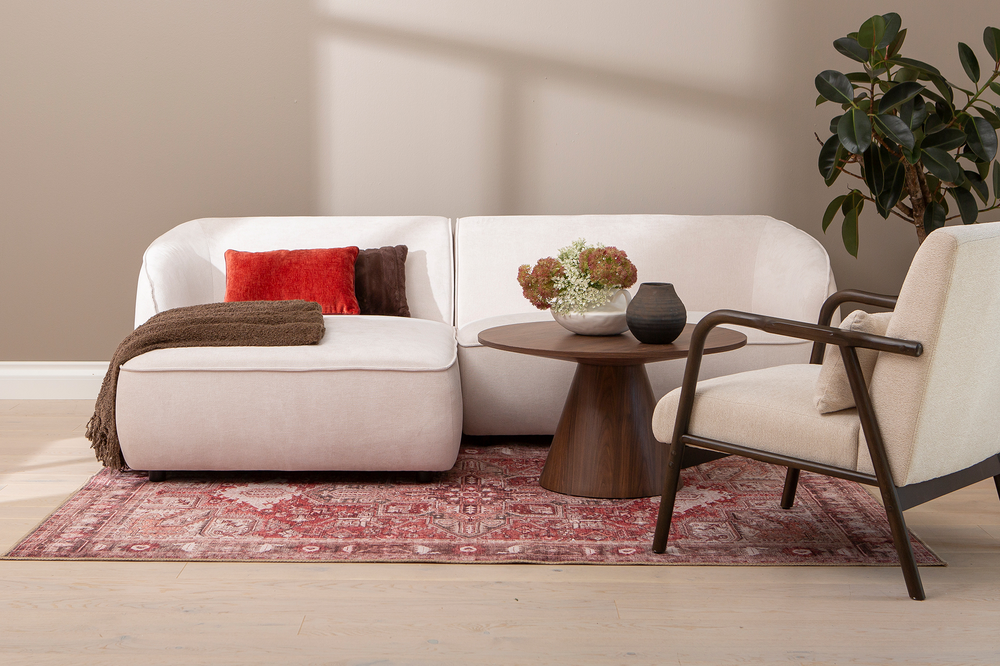
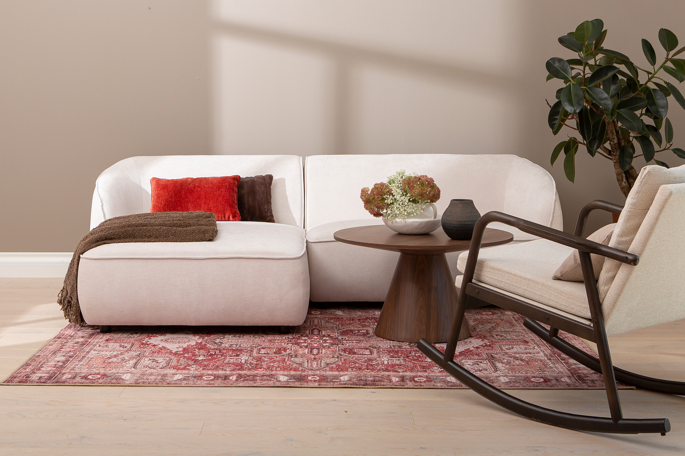
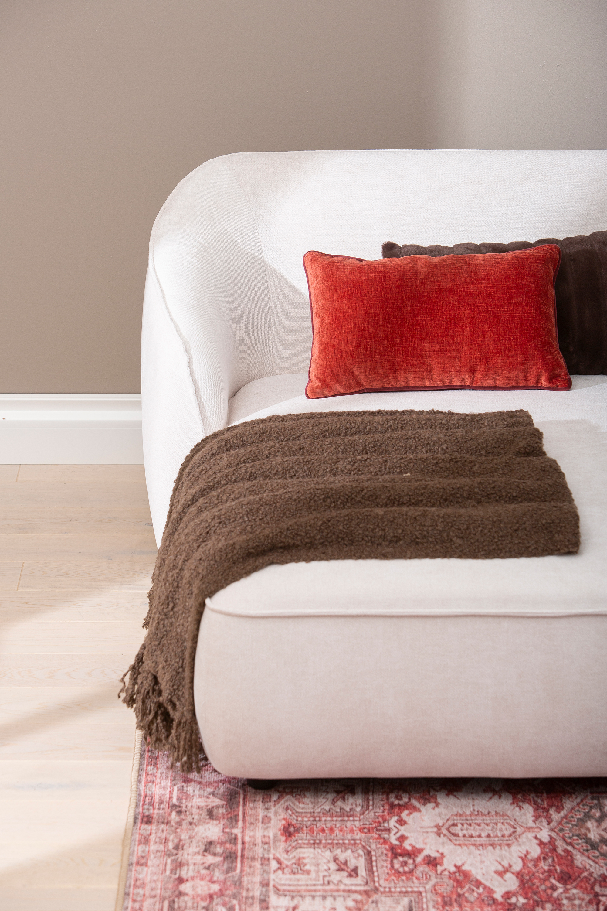
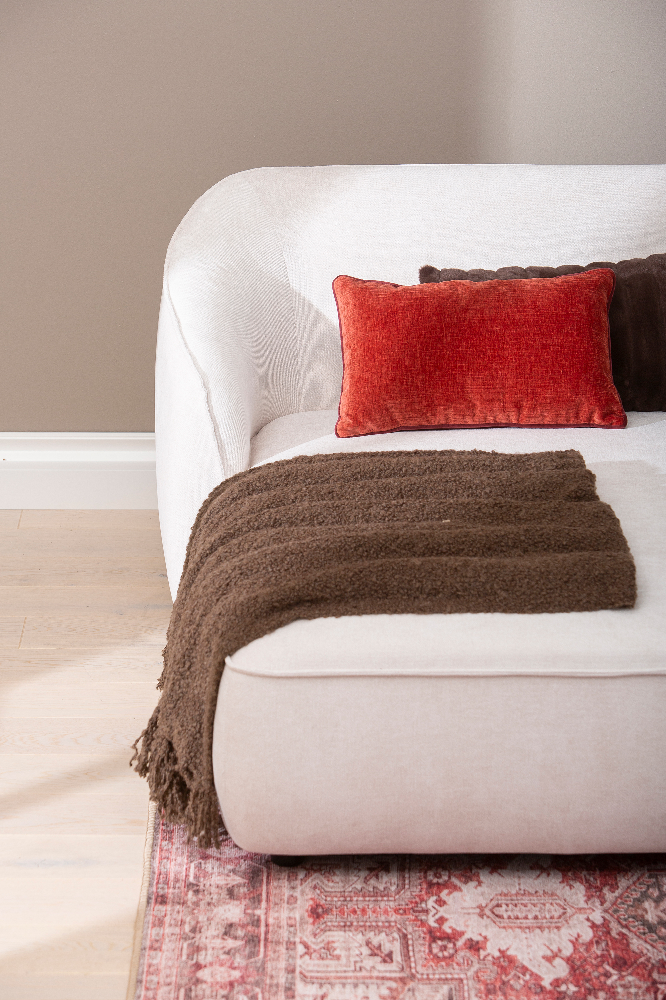

Joy 3-seat chaise sofa (left) white
198421
 







 

Description
Experience refined comfort and modern living with the Joy 3-seat chaise sofa, designed with a left-handed chaise for optimal room arrangement. Upholstered in elegant white fabric, this sofa blends seamlessly into contemporary interiors, offering a spacious seating area perfect for relaxation. Available in three tiers—Gold, Silver, and Bronze—the Joy sofa caters to different preferences and budgets, ensuring a stylish and functional addition to your home. Part of the exclusive NEST & LIVING collection, this sofa balances aesthetic appeal with durable craftsmanship.
Technical specifications
| Handedness when viewed from the front | Left-handed |
|---|---|
| Color | White |
| Seating capacity | 3 seats with chaise lounge |
| Product tiers | Gold, Silver, Bronze |